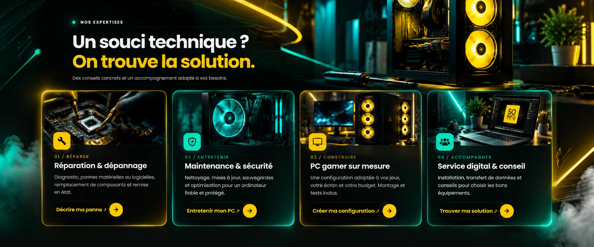

CONFIGURATION 01
PC GAMER
Budget
▤Mémoire PC :Kingston FURY 16GB 2x8GB
3200MHz DDR4
3200MHz DDR4
◉Processeur :AMD Ryzen 5 5600
▣Stockage :Kingston NV2
500Go NVME
500Go NVME
▧Carte Graphique :RTX™ 3050 6GB

799.00€
Voir la fiche complète ↗RÉPARATION · MAINTENANCE · CONSEIL
Dépannage, réparation, maintenance et configuration sur mesure.
Des solutions simples, rapides et efficaces pour tous vos besoins informatiques.

Pour toute prestation ou configuration PC
CONFIGURATEUR PC SO INFO
TON SETUP. TES RÈGLES.
Choisis tes composants, ajuste ton budget et compose une configuration qui correspond à tes jeux, tes projets et ton style. SO INFO vérifie ensuite les détails avant devis.
CONFIGURATION SUR MESUREDe l’idée au setup.Créer ma config ↗CONFIGURATION 01
CONFIGURATION 02

NOS EXPERTISES
Des conseils concrets et un accompagnement adapté à vos besoins.
Diagnostic, pannes matérielles ou logicielles, remplacement de composants et remise en état.
Décrire ma panne ↗Nettoyage, mises à jour, sauvegardes et optimisation pour un ordinateur fiable et protégé.
Entretenir mon PC ↗Une configuration adaptée à vos jeux, votre écran et votre budget. Montage et tests inclus.
Créer ma configuration ↗Installation, transfert de données et conseils pour choisir les bons équipements.
Trouver ma solution ↗PC GAMER & CONFIGURATIONS
Des machines pensées pour vos envies, avec un vrai souci d’équilibre.
POLYVALENTUne base performante pour jouer, étudier et créer au quotidien.
Demander un devis ↗PERFORMANCEPour viser plus haut en jeu, streaming ou création de contenu.
Composer ma config ↗SO+Une machine imaginée ensemble, selon vos usages et votre budget.
Parler de mon projet ↗Les visuels sont illustratifs. Chaque configuration et son tarif sont définis selon les besoins et les composants disponibles.

WEB DESIGN · SUR MESURECRÉATION DIGITALE
Site vitrine, portfolio ou page promotionnelle : développez une présence en ligne claire, moderne et adaptée à votre activité, avec un design personnalisé et une expérience mobile soignée.
ON EN DISCUTE ?
Expliquez-nous ce dont vous avez besoin. Nous vous aiderons à identifier la prochaine étape, simplement.